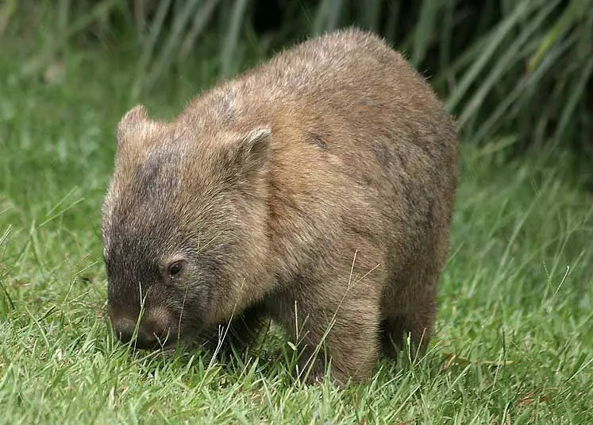

Comportamento 👍

Atividades diurnas e noturnas 🌙
Alimentação 🍎

Reprodução 👶
Crescimento e desenvolvimento 📈
Os vombates são animais noturnos. Eles passam a maior parte do tempo
procurando comida à noite, quando os predadores estão menos ativos.
Durante o dia, eles ficam em suas tocas para se proteger do calor
e dos predadores.
Os vombates são herbívoros e se alimentam de uma variedade de plantas,
incluindo gramíneas, folhas, cascas de árvores e raízes. Eles são animais
noturnos e passam a maior parte do tempo procurando comida à noite.
Os vombates são marsupiais, o que significa que as fêmeas têm uma bolsa
onde os filhotes se desenvolvem. A gestação dura cerca de 21 dias, e a fêmea
dá à luz a um único filhote. O filhote fica na bolsa da mãe por cerca de 6-7 meses,
até que esteja totalmente desenvolvido.

O crescimento e desenvolvimento dos vombates é um processo complexo
que envolve mudanças físicas e comportamentais. Os vombates nascem muito
pequenos e indefesos, mas crescem rapidamente e aprendem a se alimentar e
se proteger. Eles atingem a maturidade sexual aos dois anos de idade e vivem
em média 10 anos.